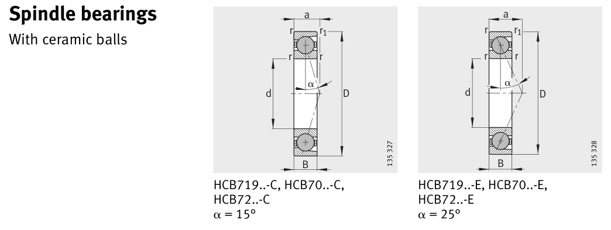

Original catalogue drawing - FAG Schaeffler HR 1, page 298

Scanned from the manufacturer catalogue page listing this part number. All part numbers printed on that table share the same drawing.
Scale cross-section
Blue = inner / outer ring, yellow = rolling element. Drawn to scale from this part's own
dimensions for selection reference only - not a manufacturing or assembly drawing.
Dimension table (mm / inch)
Symbol
Dimension
mm
inch
d
Bore diameter
60
2.3622
D
Outside diameter
110
4.3307
B
Inner-ring / bearing width
22
0.8661
r
Chamfer (min)
1.5
0.0591
Notes
Weights are given in kg. Load ratings are shown in both the original catalogue units and the converted value (1 N = 0.2248 lbf). Data is provided for selection reference only - confirm against the latest official catalogue before ordering.
Main dimensions
Bore d (mm)
60
Outside dia. D (mm)
110
Width B (mm)
22
Load ratings & speeds
Basic dynamic load rating Cr (lbs)
8543
Basic static load rating Cor (lbs)
6857
Basic dynamic load rating Cr (N)
38000
Basic static load rating C0r (N)
30500
Fatigue limit load Cur (N)
2260
Limiting speed nG (rpm)
16,000
Effective load centre a (mm)
23
Weight
Weight (kg)
0.8
Mounting dimensions (fillets / shoulders)
Housing fillet r max (mm)
1.5
Chamfer r1 min (mm)
1.5
Shaft shoulder da (mm)
69.5
Housing shoulder Da (mm)
101.5
Housing fillet ra max (mm)
1.5
Housing fillet ra1 max (mm)
1.5
Bearing life (ISO 281 basic rating life)
C / P
Equivalent load P (N)
L10 (106 rev)
L10h at 3,000 rpm
4
9,500
64
356
6
6,333
216
1,200
8
4,750
512
2,844
10
3,800
1,000
5,556
15
2,533
3,375
18,750
Basic rating life per ISO 281: L10 = (C/P)3 with C = 38,000 N. Hours = L10 x 106 / (60n). Life-modification factors for lubrication, contamination and temperature (aISO) are not included.
Source & traceability
Brand
FAG
Source catalogue
FAG / Schaeffler Rolling Bearings HR 1
Catalogue page
p.298 (dimensions)
Load ratings in newtons, fatigue limit load Cur, limiting speed nG and reference speed nB.
Send us the quantity you need and we will come back with price and
lead time, normally within 24 hours. Equivalent parts from other brands can be quoted at the same time.